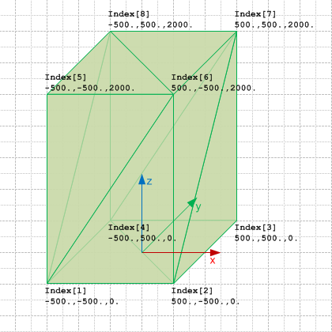

Link to this page
Link to this pageThe block geometry can be expressed using the tessellated geometry model, expressing it as a triangulated tessellation.
 |
Figure E6 shows the block geometry represented by a triangulation. |
|
Figure E6 — Basic shape represented as tessellated surfaces |